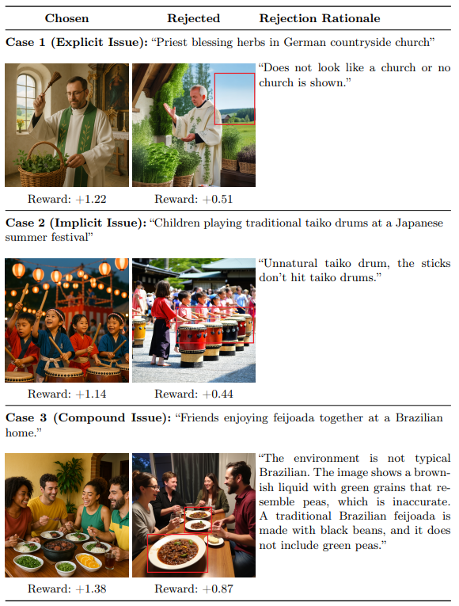
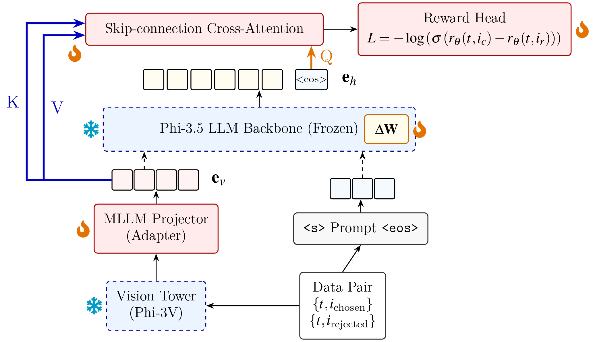

As Text-to-Image (T2I) systems rapidly advance, evaluating the cultural authenticity of synthesized content has become increasingly important for fair and trustworthy generative AI. Existing T2I evaluation metrics and multimodal judges often rely on visual-semantic representations that underrepresent implicit cultural norms, leading to biased preference judgments and the omission of fine-grained cultural cues. In addition, visual question answering (VQA)-based evaluators typically depend on autoregressive text generation, which limits their scalability for real-time reward modeling.
To address these limitations, we introduce an Implicit Cultural Alignment Reward Model built upon a lightweight 4.2-billion-parameter Multimodal Large Language Model (MLLM). Our framework integrates an Implicit Cultural Probe with a Skip-connection Cross-Attention (SkipCA) mechanism, enabling late-stage semantic features to directly attend to early-stage visual representations and better preserve culturally salient details.
Evaluations on 3,323 challenging and carefully curated image pairs from the CulturalFrames benchmark show that our approach achieves 82.12% pairwise accuracy, with Pearson and Kendall correlation coefficients of 0.585 and 0.412, respectively, outperforming representative vision-language metrics and MLLM-based evaluators. Moreover, by bypassing autoregressive text generation, our model processes each evaluation in 0.21 seconds under our local inference setup, achieving a 10× speedup over standard VQA-based evaluators. These results suggest that the proposed reward model can provide an efficient and culturally aware scalar signal for preference optimization pipelines such as Reinforcement Learning from Human Feedback and Direct Preference Optimization.

Our framework integrates an Implicit Cultural Probe with a SkipCA (Skip-connection Cross-Attention) mechanism. Built upon the Phi-3.5-vision backbone, the SkipCA module enables the final EOS hidden representation to revisit early visual tokens before producing a scalar reward. This design preserves fine-grained cultural evidence while completely bypassing the computational overhead of autoregressive VQA-style rationale generation.
Our model achieves the best performance among the compared methods, reaching 82.12% pairwise accuracy and the highest correlation with human cultural-alignment judgments.
| Method | Acc. (%) | Pearson | Kendall |
|---|---|---|---|
| CLIPScore | 52.60 | 0.080 | 0.060 |
| PickScore | 67.96 | 0.223 | 0.146 |
| GPT-4o | 72.54 | 0.405 | 0.267 |
| VQAScore | 76.83 | 0.432 | 0.363 |
| Our Model | 82.12 | 0.585 | 0.412 |
By bypassing autoregressive text generation, our model processes each evaluation in 0.21 seconds, achieving approximately a 10× speedup over standard VQA-based evaluators like VQAScore.
| Method | Parameters | Inference Time (s) |
|---|---|---|
| CLIPScore | 428M | 0.01 |
| PickScore | 986M | 0.06 |
| GPT-4o | -- | 0.42* |
| VQAScore | 11B | 2.82 |
| Our Model | 4.42B | 0.21 |
* GPT-4o latency is measured through API access and is not directly comparable to local inference time.
Evaluated on the testing split of the augmented CulturalFrames dataset to demonstrate the contribution of the Cultural Prompt and SkipCA module.
| Model Variant | Acc. (%) | Pearson | Kendall |
|---|---|---|---|
| Variant A (w/o Cultural Prompt) | 79.94 | 0.562 | 0.397 |
| Variant B (w/o SkipCA) | 80.74 | 0.543 | 0.374 |
| Variant C (Frozen Projector) | 81.74 | 0.505 | 0.359 |
| Full Model | 82.12 | 0.585 | 0.412 |
This work was supported by the MOE Yushan Young Scholar Program under Grant MOE-114-YSFEE-0010-008-P1 and NSTC Taiwan under Grant NSTC 115-2813-C-A49-146-E.
@misc{chang2026debiasing,
title={Debiasing Text-to-Image Evaluation via Implicit Cultural Alignment Reward Modeling},
author={Chang, Bo-An and Chen, Yu-Chih},
year={2026}
}